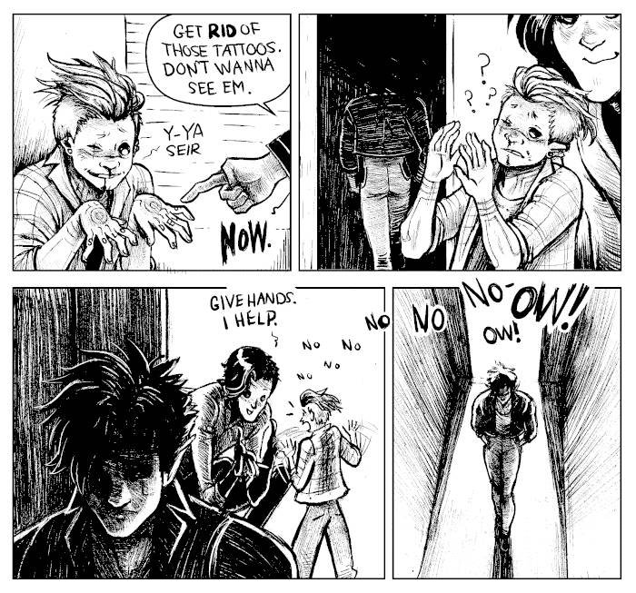

About
About Projects
Projects Books
Books Games
Games Stories
Stories Store
Store Notes
Notes How-to
How-toTattoos
In 2015, My friend Marianne Vincent was practicing tattooing and did two of my tattoos. The first was a pentagon on my upper back(reason why I have a little pentagon on the upper left corner of this website, photo pending). The second was the blackout tattoo on my left forearm, from the elbow to the wrist, done in two parts (4 sessions total, 2 per half).
In 2011 we borrowed a friend's tattoo machine and Dev tattooed a line circle on the side of my left foot.
In 2016 Devine and & bought a tattoo machine and started to continue my blackout tattoo. We skipped the elbow because it was Dev's second time tattooing anyone and that we thought it'd be too hard to do correctly. We did a first 'test band' but did not continue because we had the wrong needles(not good for fill). We couldn't have any sent out to us because we were out sailing in Mexico. Even now(2023), the tattoo has not been finished. Living on a boat has kept us busy, and it's difficult to want to have my left am, my drawing arm, swollen up.
In 2023 I visited Montreal and asked Lizbeth for a tattoo of my characters cee and viktor.